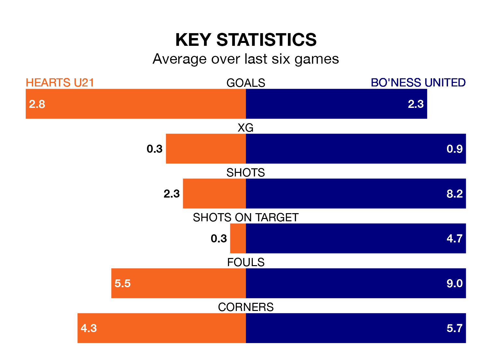

Two of the Lowland Football League's top sides face each other at the Ainslie Park Stadium in Friday's late kick-off, when second-placed Hearts U21 host third-placed Bo'ness United.
Hearts U21 have picked up 20 wins and six draws from 32 games so far this season, and sit five points above the visitors going into the 7.45pm match.
Bo'ness, meanwhile, have won 19 and drawn four of 31, picking up 61 points.
Hearts U21 are in exceptional form in the Lowland Football League, with six wins and no losses from their last six games.
With five wins and a draw over that period, Bo'ness's form is slightly worse – they have taken 16 points from 18, compared to Hearts's 18.
With 87 goals in 32 games so far this season, the hosts are the league's second-highest scorers with 2.7 goals per game. And they are conceding fewer than average, letting in 39 goals at a rate of 1.2 per game.
United are also above average scorers, with 2.0 goals per game, compared to a league average of 1.7. They have conceded 1.3 goals per game.
In the last three years, Hearts U21 and Bo'ness have played each other on three occasions. They won one each, and they drew once.
Their last meeting was on October 7, when they played out a 3-3 draw.
Hearts U21's last match was on April 5, a 5-3 win against East Stirlingshire.
Bo'ness beat Linlithgow Rose 2-1 last time out, on March 23.
Updated: 14:47 (UTC), 09/04/24